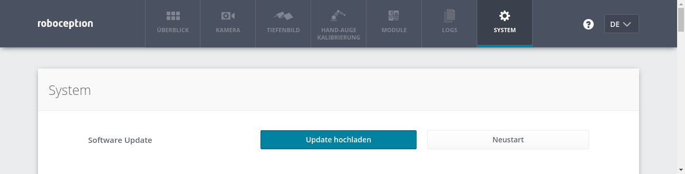

Wartung¶
Aktualisierung der Firmware¶
Angaben zur aktuellen Firmware-Version sind auf der Seite System in der Zeile Systeminformationen in der Web GUI angegeben. Diese Informationen lassen sich mithilfe einer GET /system-Anfrage über die die REST-API-Schnittstelle des rc_cube abrufen. Die Aktualisierung der Firmware kann entweder über die Web GUI oder über die REST-API vorgenommen werden.
Warnung
Nach einem Firmware-Update werden alle konfigurierten Parameter der Softwaremodule auf die Werkseinstellungen zurückgesetzt. Bevor das Update vorgenommen wird, sollten daher alle Einstellungen (über die REST-API-Schnittstelle) abgefragt und in der Anwendung oder auf dem Client-PC gesichert werden.
Folgende Einstellungen sind davon ausgeschlossen und bleiben auch nach einem Firmware-Update erhalten:
- die Netzwerkkonfiguration des rc_cube, samt der ggf. vergebenen festen IP-Adresse und des benutzerdefinierten Gerätenamens,
- das letzte Ergebnis der Hand-Auge-Kalibrierung, was bedeutet, dass der rc_cube nicht neu zum Roboter kalibriert werden muss, es sei denn, die Montage wurde verändert, und
- Schritt 1: Download der neuesten Firmware
- Firmware-Updates werden in Form einer Mender-Artefakt-Datei bereitgestellt, die an ihrem
.mender-Suffix erkennbar ist.
Ist ein neues Firmware-Update für den rc_cube erhältlich, kann die Datei von der Roboception-Homepage (http://www.roboception.com/download) auf den lokalen Rechner heruntergeladen werden.
- Schritt 2: Hochladen der Update-Datei
Soll das Update über die REST-API des rc_cube vorgenommen werden, kann der Benutzer auf die Anfrage
POST /system/updatezurückgreifen.Um die Firmware über die Web GUI zu aktualisieren, muss auf der Seite System in der Zeile Software-Update die Schaltfläche Update hochladen betätigt werden (siehe Abb. 42). Nachdem die gewünschte Update-Image-Datei (Dateierweiterung
.mender) aus dem lokalen Dateisystem ausgewählt und geöffnet wurde, startet das Update.Abb. 42 Web GUI-Seite System
Je nach Netzwerkarchitektur und Konfiguration kann das Hochladen mehrere Minuten in Anspruch nehmen. Während das Update über die Web GUI läuft, zeigt ein Statusbalken an, wie weit das Update bereits vorangeschritten ist.
Bemerkung
Je nach Webbrowser kann es vorkommen, dass der angezeigte Statusbalken den Abschluss des Updates zu früh angibt. Es empfiehlt sich, zu warten, bis sich ein Benachrichtigungsfenster öffnet, das das Ende des Updatevorgangs anzeigt. Insgesamt ist mit einer Update-Dauer von mindestens fünf Minuten zu rechnen.
Warnung
Die Webbrowser-Registerkarte, die die Web GUI enthält, darf weder geschlossen noch aktualisiert werden, da der Update-Vorgang anderenfalls unterbrochen wird. Ist dies der Fall, muss der Update-Vorgang neu gestartet werden.
- Schritt 3: Neustart des rc_cube
Um ein Firmware-Update auf den rc_cube aufzuspielen, muss nach dem Upload der neuen Image-Datei ein Neustart vorgenommen werden.
Bemerkung
Die neue Firmware-Version wird in die inaktive Partition des rc_cube hochgeladen. Erst nach dem Neustart wird die inaktive Partition aktiviert und die aktive Partition deaktiviert. Kann das aktualisierte Firmware-Image nicht geladen werden, bleibt diese Partition des rc_cube inaktiv und es wird automatisch die zuvor installierte Firmware-Version von der aktiven Partition verwendet.
Über die REST-API lässt sich der Neustart mittels der Anfrage
PUT /system/rebootvornehmen.Nachdem die neue Firmware über die Web GUI hochgeladen wurde, öffnet sich ein Benachrichtigungsfenster, in dem der Benutzer aufgefordert wird, das Gerät sofort neu zu starten oder aber den Neustart zu verschieben. Soll der rc_cube zu einem späteren Zeitpunkt neu gestartet werden, kann dies über die Schaltfläche Neustart auf der Web GUI-Seite System vorgenommen werden.
- Schritt 4: Bestätigung des Firmware-Updates
Nach dem Neustart des rc_cube ist die Versionsnummer des derzeit aktiven Firmware-Images zu überprüfen, sodass sichergestellt ist, dass das aktualisierte Image erfolgreich geladen wurde. Dies kann entweder über die Web GUI auf der Seite System oder über die REST-API mittels der Anfrage
GET /system/updatevorgenommen werden.Kann das Firmware-Update nicht erfolgreich aufgespielt werden, ist der Roboception-Support zu kontaktieren.
{kind=link}
Wiederherstellung der vorherigen Firmware-Version¶
Nach einem erfolgreichen Firmware-Update wird das vorherige Firmware-Image auf der inaktiven Partition des rc_cube hinterlegt und kann von dort bei Bedarf wiederhergestellt werden. Dieses Verfahren wird auch als Rollback bezeichnet.
Bemerkung
Es wird dringend empfohlen, die neueste Firmware-Version zu verwenden, die von Roboception zur Verfügung gestellt wurde. Auf das Rollback sollte nur dann zurückgegriffen werden, wenn es mit der aktualisierten Firmware-Version große Probleme gibt.
Die Rollback-Funktion kann lediglich über die REST-API-Schnittstelle des rc_cube aufgerufen werden – mithilfe der Anfrage PUT /system/rollback. Die Anfrage kann entweder mit einem HTTP-kompatiblen Client oder, wie in Swagger UI beschrieben, über einen Webbrowser ausgelöst werden. Wie beim Update-Prozess ist es auch beim Rollback nötig, das Gerät im Anschluss neu zu starten, um die wiederhergestellte Firmware-Version zu laden.
Warnung
Wie nach einem Firmware-Update werden alle konfigurierten Parameter der Softwaremodule auf die Werkseinstellungen zurückgesetzt. Bevor das Rollback vorgenommen wird, sollten daher alle Einstellungen (über die REST-API-Schnittstelle) abgefragt und in der Anwendung oder auf dem Client-PC gesichert werden.
Neustart des rc_cube¶
Nach einem Firmware-Update oder einem Software-Rollback muss der rc_cube neu gestartet werden. Der Neustart lässt sich entweder programmgesteuert mithilfe der Anforderung PUT /system/reboot über die REST-API-Schnittstelle des rc_cube oder manuell auf der Seite System der Web GUI vornehmen.
Aktualisierung der Softwarelizenz¶
Lizenzen, die von Roboception zur Aktivierung zusätzlicher Funktionen erworben werden, können über die Seite System der Web GUI installiert werden. Der rc_cube muss neu gestartet werden, um die Lizenz nutzen zu können.
Bemerkung
Für den Fall, dass ein Bildschirm sowie Maus und Tastatur an den rc_cube angeschlossen sind, kann die Aktualisierung der Softwarelizenz auch direkt am rc_cube mithilfe der Web GUI und einem separaten USB-Stick, von welchem die neue Lizenzdatei installiert werden kann, erfolgen.
Download der Logdateien¶
Während des Betriebs dokumentiert der rc_cube wichtige Informationen, Hinweise und Fehler in sogenannten Logdateien. Zeigt der rc_cube ein unerwartetes oder fehlerhaftes Verhalten, kann mithilfe der Logdateien nach der Fehlerursache geforscht werden. Logeinträge lassen sich über die Seite Logs auf der Web GUI ansehen und filtern. Wird der Support kontaktiert (Kontakt), sind die Logdateien sehr hilfreich, um Probleme aufzuspüren. Um diese als tar.gz-Datei herunterzuladen, ist die Option Alle Logs herunterladen auf der Seite Logs der Web GUI auszuwählen.
Die Logs sind nicht nur über die Web GUI, sondern auch über die REST-API-Schnittstelle des rc_cube zugänglich. Hierfür können die Anfragen des Typs GET /logs und GET /logs/{log} verwendet werden.
Bemerkung
Für den Fall, dass ein Bildschirm sowie Maus und Tastatur an den rc_cube angeschlossen sind, können die Log-Dateien mithilfe der Web GUI auch direkt vom rc_cube auf einen separaten USB-Stick heruntergeladen werden.